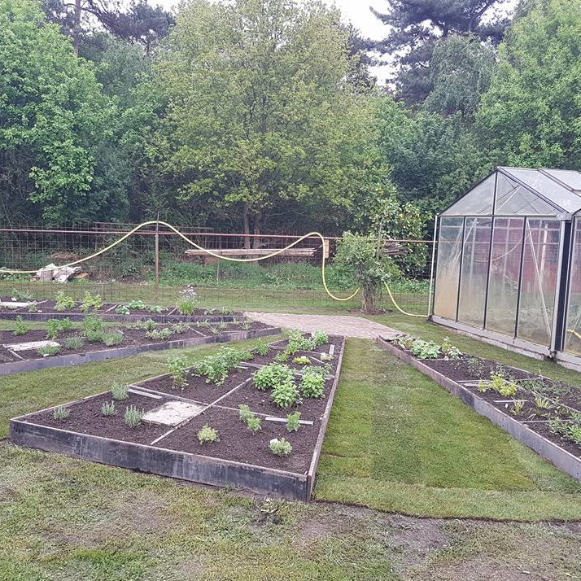
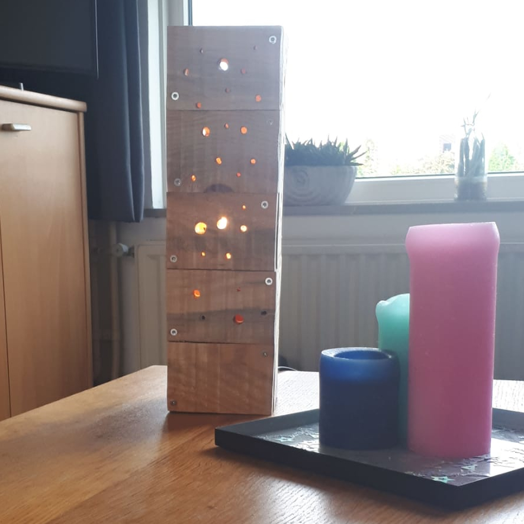
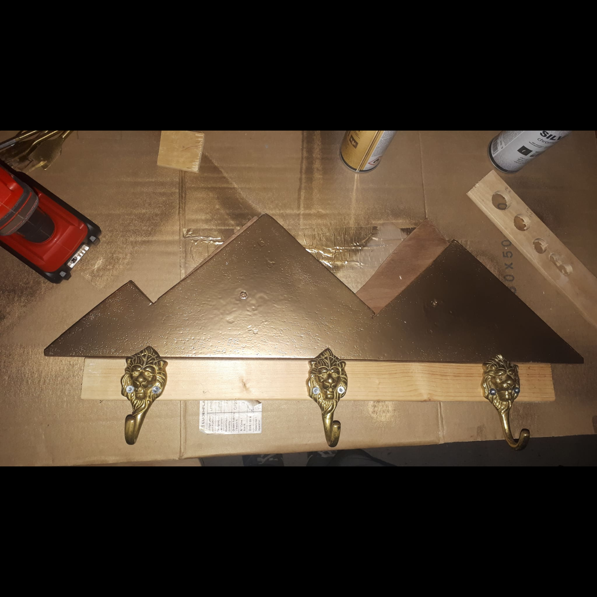
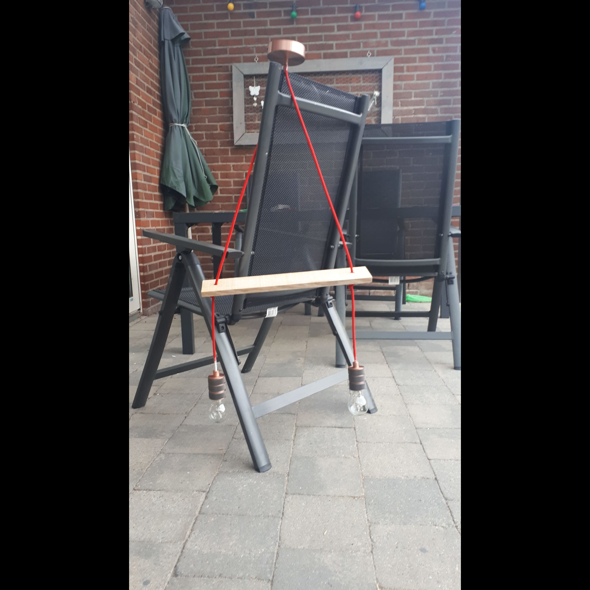

kruidentuin

ik heb de opdracht gekregen om een kruidentuin te maken. we kregen trespa platen om de vorm te maaken die we vast op elkaar hebben geschroefd.
na de buitenkant gemaakt te hebben hebben we de vakken verdeling gemaakt en gevuld met zand, een klein stoepje gelegd en nieuwe grasmatten tussen de bakken.
ten slot hebben we de kruidenplanten gepoot en snel waren de 1e kruiden bruikbaar!
teras tafel

toen ik 3 ronde palen zag liggen dacht ik, Hey daar kan een tafel van gemaakt worden. dus heb ik de palen schuin af gedaan een paar schaaldelen gepakt klein frame gemaakt van de afgekorte afvalstukken van de schaaldelen alles op elkaar geschroefd en de tafel was klaar. de tafel is later verkocht geworden
kinderbankje

ik kreeg de vraag om een klein bankje te maaken voor een kind ik heb daarvoor 3 schaaldelen gepakt 2 panlatjes op 45graden afgezaagt en alles in elkaar geschroefd.
materialen kast

na een fantastische ruil (12 lampenkappen tegen een stapel schaaldelen) had ik een idee. al mijn materialen lagen nog in een hoekje ongeorganiseerd dus besloot ik om er een kastje voor te maken na flink wat zagen en schuuren was de kast dan eindelijk klaar om in elkaar gezet te worden maar gelukkig kreeg ik hulp van een goeie vriend!
tafel lamp

ik ging verhuizen!!! dat betekende een eige plekje!!! maar wat is een eige plek zonder een lamp? dus ik ging naar een lokale winkel voor pallets vragen heb er 4 kunnen krijgen wat dat eigelijk al teveel was voor die tijd heb de latjes kort gezaagd en er allemaal verschillende grote gaten in gemaakt vast geschroefd en een lampenfitting in gezet en de lamp was af!
kapstok

in een huis is natuurlijk ook een kapstok maar natuurlijk wil ik dan ook een zelf gemaakte kapstok ik zag een foto van een kapstok met bergen. ik vond piramides leuker dus heb ik piramides getekend en uitgezaagd en ze op een dikkere balk geschroefd een vriend van mij had nog kapstokhaakjes die ik kon hebben later heb ik de schroeven vervangen in brass schroeven zodat de kleur overeen komt met de haakjes. achter de bergen heb ik een ledstrip geplakt om de kapstok een mooi effect te geven
hanglamp

mijn favoriete lamp de hanglamp ik had een idee een schommel met 2 lampen natuurlijk geen echte schommel maar 1 voor de sier ik heb rode kabel gekocht en een plafondje nadat ik de 2 kabels in het plafond had pakte ik een palletplank die nog over was van een vorig project en haalde ik de draad daar doorheen en maakte ik de fittingen aan de kabel vast. maar natuurlijk konden er geen normale peeren in dus ging ik kijken in een bouwzaak en vond peeren met kleine ledlampjes er in ik was meteen verkocht en nam ze meteen mee draaide ze er in teste de lamp en meteen opgehangen!
tappasPlanken

na dat ik me een tijdje had verveeld dacht ik hey een tappasplank! dat wil ik hebben dus heb ik wat schaaldelen gepakt een vorm getekend en uitgezaagt flink geschuurd verschillende vormen gemaakt en al snel kwamen de vragen of mensen er een zouden mogen koopen
aubergine tappasplank

nadat de buurt verzadigd was met de tappasplanken ben ik begonnen met ze online te verkopen dit is de 1e tappasplank die te koop was. waarom die rare vorm? ik dacht iedereen heeft de normale vorm al vaak genoeg gezien en ik wil wat anders
led onderzetter

ik zag wat afval hout liggen en dacht als ik daar een rondje uitzaag met een 7gatenzaag dan is dat een leuke onderzetter. maar ik vond hem nogal saai dus heb ik een goedkoope ledstrip van 30cm gekocht en die er omheen gedaan helaas has de ledstrip te fel van licht dus heb ik met wat schuurpapier het wat doffer gemaakt.